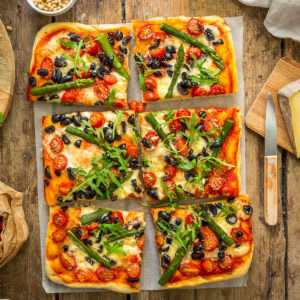

Pizza-focaccia aux asperges, tomates et Tomme de Savoie IGP

Hello les gourmands ! Aujourd’hui on se retrouve avec une recette de pizza focaccia aux asperges tomates et Tomme de Savoie IGP.
Cette base de pâte à pizza est ma favorite ! C’est une pâte à pizza épaisse à base d’huile d’olive, très moelleuse, c’est d’ailleurs pour ça que j’appelle cette recette pizza-focaccia car elle me fait penser à une pâte à focaccia.
Cette recette est toute simple et déclinable à l’infini. Cela faisait très longtemps que je voulais prendre le temps de faire une petite photo et la venue d’une petite collaboration autour de la Tomme de Savoie est l’excuse parfaite 😉.
Pour la petite histoire, pendant des siècles, les familles savoyardes ont fabriqué du beurre à partir de la crème du lait et le reste du lait servait à la fabrication d’un fromage de petite taille, la Tomme de Savoie. Ainsi la Tomme de Savoie existe historiquement en version «maigre» qui n’est en rien le fruit de la mode ! Aujourd’hui, seule la véritable Tomme de Savoie possède une Indication Géographique Protégée qui garantit l’origine savoyarde du lait, de la fabrication et de l’affinage. Pour vous aider à la reconnaître, un marquage du mot « Savoie » sur le pourtour du fromage identifie la Tomme de Savoie sous signe de qualité. Il s’agit d’un fromage fabriqué au lait cru ayant une durée d’affinage optimale allant de 30 jours à 3 mois.
C’est un fromage que l’on affectionne particulièrement car mes amis n’aiment pas les fromages trop forts et celui-ci a su retenir leur attention 😉
Pour cette pizza j’ai ajouté des tomates, des asperges et un peu d’ail pour accompagner ce fromage et c’était délicieux !
Je vous laisse avec la recette, vous me direz ce que vous en avez pensé,
Belle journée à tous
Ingrédients
- Farine - 500g
- Levure - 1 sachet
- Huile d'olive - 3 càs
- Eau tiède - 250ml
- Sel - 8g
- Sauce tomate - 2 càs
- Asperges vertes - 1 botte
- Tomme de savoie IGP - 120g
- Tomates cerise - 1 quizaine
- Ail en poudre - 1 càc
- Roquette - 1 poignée
- Olives noires dénoyautées
Instructions
- Préparez la pâte : Dans un saladier, versez la farine, la levure, le sel et mélanger Incorporer l'huile d'olive et l'eau tiède et pétrir la pâte 10 bonnes minutes Laisser reposer la pâte dans un récipient légèrement huilé pendant 1 à 2h
- Cuire les asperges dans de l’eau bouillante (environ 6 minutes)
- Préchauffez le four à 200°C
- Étalez la pâte sur une plaque préalablement huilée allant au four
- Étalez la sauce tomate
- Répartissez la Tomme de Savoie, les asperges, les tomates cerise et les olives noires
- Saupoudrez d’un peu d’ail en poudre
- Enfournez pendant 20 minutes à 200°c
- Au moment de servir répartissez un peu de roquette sur le dessus
- Servir la focaccia tiède accompagnée d’une salade
- Bon appétit !
Les tips de la communauté
Excellente réception globale avec des compliments sur la présentation colorée et appétissante. L'auteure clarifie l'usage de levure sèche de boulanger, et les lecteurs apprécient particulièrement l'esthétique du plat.
Astuces
- Utiliser de la levure sèche (levure de boulanger) pour le meilleur résultat